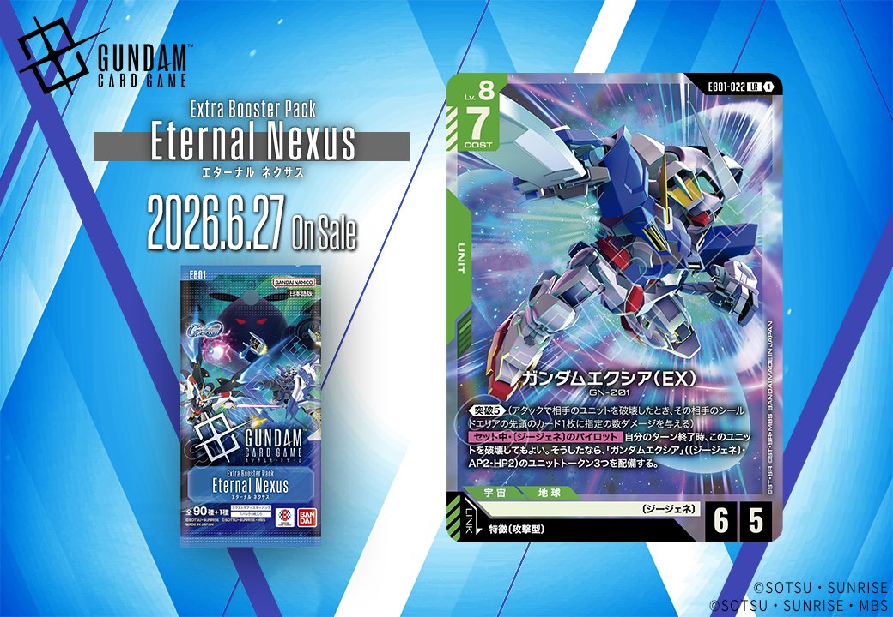

6月27日発売のEB01「Eternal Nexus」より、緑のUNIT「ガンダムエクシア(EX)」が収録されます。このカードは特徴に攻撃型を持つPILOTとのリンクを持ち、EXバリアントとして登場する新たなガンダムエクシアです。

ガンダムエクシア(EX) (EB01-022)
| 色 | 緑 | タイプ | UNIT |
| Lv | 8 | コスト | 7 |
| AP | 6 | HP | 5 |
| 特徴 | 〔ジージェネ〕 | ||
| リンク条件 | 特徴に攻撃型を持つPILOT | ||
効果: 《突破(5)》(アタックで相手のユニットを破壊したとき、その相手のシールドエリアの先頭のカード1枚に指定の数ダメージを与える)【セット中】〔ジージェネ〕のパイロット 自分のターン終了時、このユニットを破壊してもよい。そうしたなら、「ガンダムエクシア」(〔ジージェネ〕・AP2HP2)のユニットトークン3つを配備する。
ガンダムエクシア(EX)は《突破(5)》を持つLv.8の高コストユニットで、破壊時に3体のトークンを生成する特殊な効果を持つ。ターン終了時に自壊してAP2/HP2のトークン3体に分裂できるため、盤面を一気に展開しつつ相手のAOE除去を回避する戦術が可能だ。 特徴に攻撃型を持つパイロットとのリンクに対応しており、新カードのユウ・カジマ等と組み合わせることで更なる強化が期待できる。


リンク対象カード（攻撃型 PILOT）

関連カード
-
 クィン・マンサ (オメガ・サイコミュ起動時)(EB01-024)NEW緑系 — 同色・共通特徴: ジージェネ（新カード）
クィン・マンサ (オメガ・サイコミュ起動時)(EB01-024)NEW緑系 — 同色・共通特徴: ジージェネ（新カード） -
 レイジ(EB01-066)NEW緑系 — 同色・共通特徴: ジージェネ（新カード）
レイジ(EB01-066)NEW緑系 — 同色・共通特徴: ジージェネ（新カード） -
 ビルドストライクガンダム(フルパッケージ)(EX)(EB01-021)NEW緑系 — 同色・共通特徴: ジージェネ（新カード）
ビルドストライクガンダム(フルパッケージ)(EX)(EB01-021)NEW緑系 — 同色・共通特徴: ジージェネ（新カード） -
 ユウ・カジマ(EB01-072)NEW白系 — リンク対象（攻撃型 PILOT）（新カード）
ユウ・カジマ(EB01-072)NEW白系 — リンク対象（攻撃型 PILOT）（新カード）